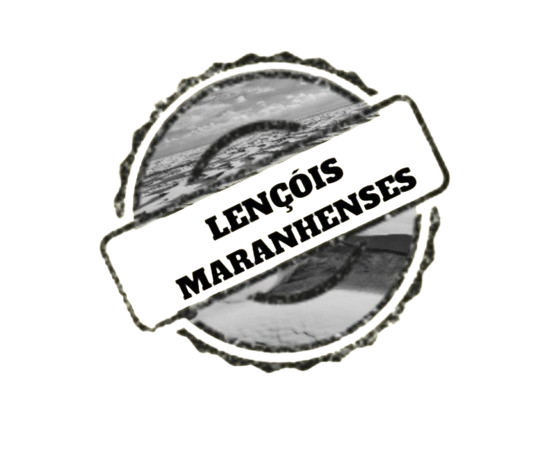
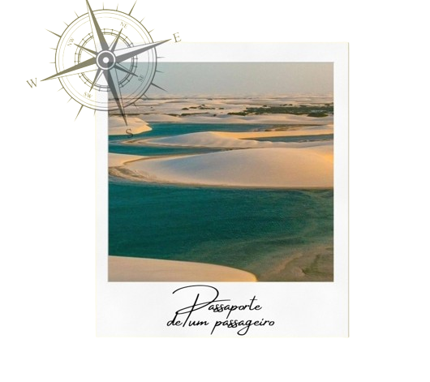
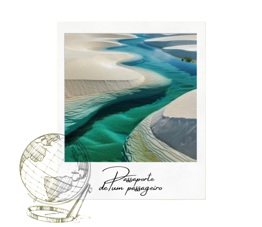
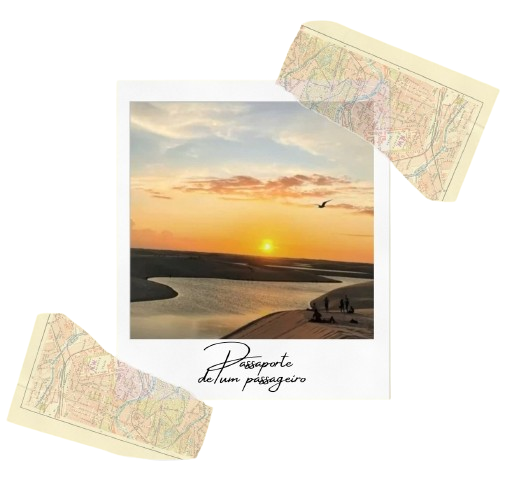

Conheça os lençois maranhenses!



Ah, os Lençóis Maranhenses, um verdadeiro paraíso escondido no nordeste do Brasil! Imagine dunas de
areia branca que se estendem até onde os olhos podem ver, intercaladas por lagoas de água cristalina
em tons de azul e verde. Não há como descrever a sensação de caminhar por esse cenário surreal e se
banhar nas lagoas refrescantes. Uma visita aos Lençóis Maranhenses é uma experiência que vai além
das palavras, é algo que todos deveriam vivenciar ao menos uma vez na vida. Quando você decidir
conhecer esse lugar mágico, prepare-se para se encantar a cada passo. Vai valer muito a pena!
Uma dica importante para quem for conhecer os Lençóis Maranhenses é estar preparado para as
caminhadas nas dunas. Recomenda-se usar roupas leves e confortáveis, calçados apropriados para areia
e não esquecer de levar água para se manter hidratado, afinal, o sol pode ser bastante intenso na
região. Além disso, não se esqueça do protetor solar e do chapéu para se proteger dos raios solares.